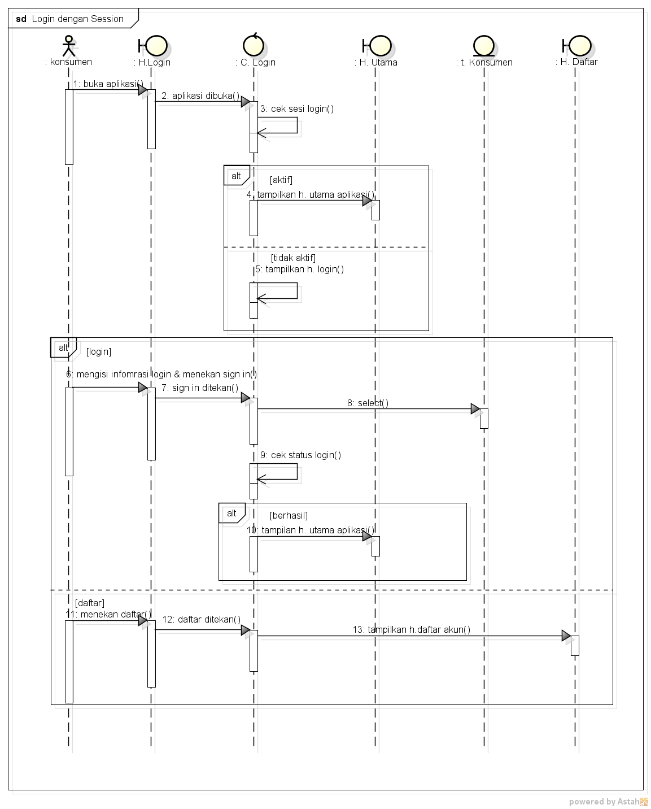

Nama : Putri Hertianti
Nim : 1811500098
Hasil saya menyadur pertemuan 7:
Menjelaskan Fungsi atau menu untuk pembuatan Sequence Diagram :
pilih menu diagram dan pilih sequence diagram
menjelaskan apa itu si Aktor atau Lifeline(actor) dan juga jangan sampai titik dua dihapus
menjelaskan apa itu Lifeline(boundery)
menjelaskan apa itu Lifeline(control)
menjelaskan apa itu Message
menjelaskan apa itu Asynchoronous Message
menjelaskan apa itu CombinedFragment
untuk mengcopy CombinedFragment silahkan klik kanan pada kotak dan pilih add operand

Download file astah usecase diagram disini